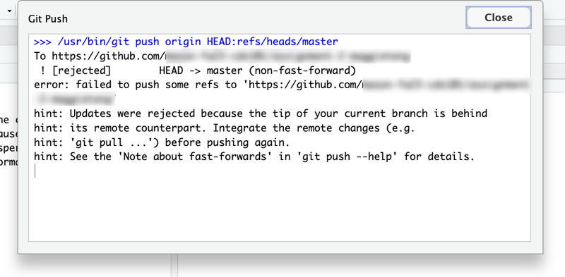

Appendix A — Frequently Asked Questions
…i.e. frequently encountered problems and how to fix them.
A.1 Software setup
A.1.1 Git is no longer installed on my computer
This sometimes happens on Macs after updating the MacOS operating system. You should re-install Git by repeating the first item from Section 2.4.1. Then restart RStudio
A.2 Working with Git and GitHub
A.2.1 Cannot push to GitHub: “Password authentication was removed”
You might find yourself with an error like this when you try to clone a repository from GitHub into RStudio, or push commits back to GitHub:
remote: Support for password authentication was removed on August 13, 2021.
remote: Please see https://docs.github.com/en/get-started/getting-started-with-git/about-remote-repositories#cloning-with-https-urls for information on currently recommended modes of authentication.
fatal: Authentication failed for 'https://github.com/mason-cds101/final-project-dominicwhite/'This usually means that you have one of the following problems with your GitHub Personal Access Token:
Incorrect token: You have not correctly created and set your GitHub token (as per the instructions in step 4 of Section 2.4.1). If this is the first time you are trying to clone from or push to GitHub, this is probably the reason.
Make sure that:
- Your token is the “Classic” token type, not the Fine-grained type.
- When you create your token, you give it permission to access and modify your repositories by clicking the “Repo”check-box in the list of Scopes.
Missing token: If you are using the online version of RStudio at https://posit.cloud, you will need to repeat the commands to store your GitHub token every time you want to Push code from a new project.
Expired token: Your previous token has expired, and you will need to create a new one and store it in RStudio. If your token used to allow you to clone from and push to GitHub but has suddenly stopped working, then this is probably the reason.
__Solution:__In all cases, to fix the problem you should re-run the following three lines of R code in from Section 2.5 in the RStudio Console to create a new GitHub token and then store that new token in RStudio (if it asks what you want to do, such as setting a new token, type in the number of the option you want in the Console and then hit enter). Make sure to do this exactly as described in Section 2.5
install.packages(c("usethis","gitcreds"))
usethis::create_github_token()
gitcreds::gitcreds_set()A.2.2 Cannot push to GitHub: “Updates were rejected”
Sometimes an error like the following occurs when trying to push to GitHub.

What this means is that you have somehow ended up with extra commits in the version of the project on Github that you do not have in the version in RStudio. (This can happen if you do things like manually uploading files to a GitHub repository without going through RStudio, or editing files on GitHub via the website instead of in RStudio. Both of these actions create a new commit on GitHub, but since commits are not automatically synced, they will not be in RStudio.)
To fix this, you will need to download the new commits from GitHub to RStudio. This is called “Pulling” (since it is the opposite of Pushing). There is a button in the Git tab or pop-up in RStudio labelled Pull with a blue downwards arrow icon. Click this to Pull the changes from GitHub-only commits into RStudio, and then try to Push again to send your RStudio-only commits to GitHub.
A.2.3 The Git tab is missing in RStudio
This typically occurs for one of two reasons: * Most common reason: you don’t have a project open in RStudio Desktop, or the project you do have open is not a Git-enabled project (probably because you created a new blank RStudio project instead). If you are trying to working on a project from this book and you created it in RStudio by cloning a GitHub repository, then it should be automatically Git-enabled. Try re-opening the RStudio project associated with the code. In RStudio Desktop, you can see the current project in the top-right, and change it by clicking there. At https://posit.cloud, you can change the project by going back to your homepage where all the projects are listed. * Less commonly, this happens in RStudio Desktop because Git is not installed (or RStudio can’t find it). Try either re-installing Git, or looking at the FAQs in the Section A.1 section for reasons why Git might be missing.
A.3 Packages
A.3.1 Installing an older version of a package
To install an older version of a package (e.g. the lmvar package), you can run these two lines of code, making sure to replace the name of the package and the version that you want to install:
require(remotes)
install_version("lmvar", version = "1.5.2", repos = "http://cran.us.r-project.org")